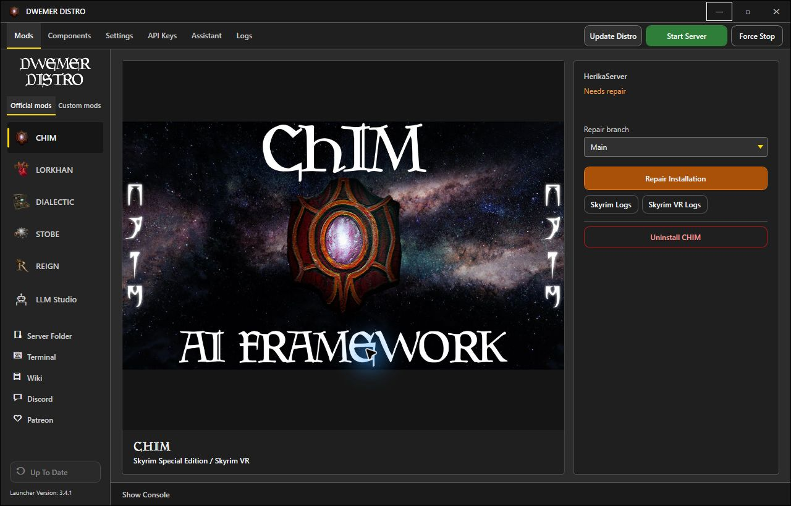

DwemerDistro
The home for the Dwemer Dynamics AI mod servers. Install it once, then use the launcher to set up, run and update the mods you play.
Download
On GitHub, open the latest release under Releases and download DwemerDistroInstaller.exe. That one file installs DwemerDistro and the launcher.
You need
- 64-bit Windows with WSL2 support and current updates
- Hardware virtualization (Intel VT-x or AMD-V/SVM) turned on
- Administrator rights
- A local drive to install to (not a network drive)
You do not need an NVIDIA graphics card. Quickstart picks a setup that suits your PC.
Install
- Run
DwemerDistroInstaller.exeand allow the administrator prompt. - Keep the default folder,
C:\DwemerDistro, unless you need another one. - Leave the WSL setup options ticked. The installer sets up WSL for you, so you do not need to install Ubuntu or turn on Windows features yourself.
- Wait while it installs. A console window opens for a while; leave it running.
- Click Finish.
If the installer stops
- Windows must restart: restart, then run the installer again.
- Virtualization is off: turn on Intel VT-x or AMD-V/SVM in your BIOS/UEFI, then run the installer again. See Microsoft's WSL guide for help.
- Unsupported Windows version: install Windows updates, then try again.
- Setup finished with errors: run the installer again. If that does not fix it, bring
C:\DwemerDistro\Logs\install.log(orLogs\install.login the folder you chose) to Discord.
Quickstart
Open DwemerDistro from the desktop shortcut or the Start menu. If a newer launcher is out, it updates itself first. Then Quickstart walks you through setup:
- Accept the recommended setup the launcher picked for your PC.
- Update the distro.
- Choose a local AI model, or skip this if you will use an online AI service.
- Tick the mods you play. You can add or remove mods later.
- Connect Hugging Face if asked. The voice installers download models from there. Create a read token, accept access to each model listed, then save and verify the token.
- Install the recommended voice and speech components.
- Click Start Server.
Big downloads can take a while. Wait for each step to finish. To run Quickstart again, open Settings and click Open next to First-Time Setup.
Set up your game
DwemerDistro runs the server side only. Each mod also needs its game plugin and its own setup. Follow the guide for your game next:
What it is
Each mod has two parts: a plugin in your game, and a server that does the AI work. DwemerDistro holds those servers, their database and the local voice and AI services.
It runs in Windows Subsystem for Linux (WSL) as its own system, named DwemerAI4Skyrim3. It is separate from Ubuntu or any other WSL system you have. The DwemerDistro launcher is the Windows app you use to control it.
The Mods page
Select a mod on the launcher's Mods page to see its status and the buttons that fit:
- Not installed: Install Server.
- Installed: the mod's Open button, such as Open CHIM, its update button and, where offered, Download Mod.
- Needs repair: Repair Installation. This restores the server's files and database without deleting your data.

Do not use Uninstall to fix a problem. For CHIM, STOBE and DIALECTIC it permanently deletes that server's database, profiles, memories and voices. It asks you to type a confirmation first. Use Repair Installation or Getting help instead.
Voices and AI
The Components page holds the shared voice, speech and helper services all mods use. Quickstart already installed the recommended set for your PC. Get that working before you add more.
The language model writes what characters say. You can use:
- An online service, such as OpenRouter. You set it up in each mod's webpage.
- A local model with LLM Studio, which you can add in Quickstart or from the Components page. Local models share graphics memory with the game, so pick one that fits while you play.
More detail: language models, local LLMs, Text-to-Speech and Speech-to-Text. These are written for CHIM, but the launcher steps are the same for every mod.
Starting and stopping
- Start Server (top bar) starts DwemerDistro. Keep it running while you play.
- A mod's Open button, such as Open CHIM, opens its server page. If the server is stopped, the launcher can start it first.
- Once the server is running, the top-bar Start Server button changes to Stop Server. Use it to shut down cleanly when you are done.
- Force Stop ends it at once. Use it only when Stop Server does not work.
Updates
- Update Distro (top bar) updates DwemerDistro and shared services. It does not change your mods. It reads Distro Update Available when an update is found. It is also the first thing to try if something breaks.
- A mod's update button (Mods page) updates the distro first, then that one mod.
- The launcher updates from the bottom of the left column. It reads Update Launcher when a new version is out.
When a mod releases a new game plugin, install that too, so the plugin and server match.
If you edit server files by hand, leave Force Updates in Settings off. When it is on, updates delete your edits.
Getting help
Try these first
- Click Update Distro.
- Run Distro Doctor in Settings. It checks and fixes common problems.
- If downloads or updates cannot reach GitHub, run Fix WSL DNS (GitHub) in Settings.
- If the launcher says the distro is missing (
WSL_E_DISTRO_NOT_FOUND), runDwemerDistroInstaller.exeagain. Update Distro cannot fix this. - For problems in a game, see that mod's log guide, for example CHIM log files and debugging.
Ask on Discord
- Open the Logs page and click Generate Distro Debugging Logs.
- The launcher saves a file in
DwemerDistro-Diagnosticson your Desktop and opens that folder. - Post the file in the support channel on Discord, with what you did and what went wrong.
The file can include your chats with the AI. Check it before you post it in public. Never post API keys or tokens.
Other setups
To run the servers on a second PC, see the Remote Hosting Guide. For Linux, see the Linux Setup Guide.
Other downloads
- DwemerDistro is also on the CHIM Nexus files page.
- The
DwemerDistro-win-x64.zipin each release is only the launcher. It does not install DwemerDistro. Use the installer on a new PC. - To check the installer, run
Get-FileHash .\DwemerDistroInstaller.exein PowerShell and compare it with the release'sSHA256SUMSfile.
Only download DwemerDistro from GitHub or the official Nexus page.